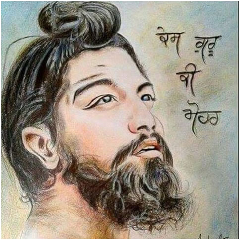
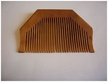
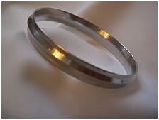
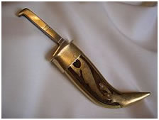

Sikhism


Five kakkars
kesh |
 |
The Kesh, or uncut, long hair, is considered by Sikhs as an indispensable part of the human body. Long known as a sign of spiritual devotion, it also emulates the appearance of Guru Gobind Singh and is one of the primary signs by which a Sikh can be clearly and quickly identified. A Sikh never cuts or trims any hair as a symbol of respect for the perfection of God's creation. The uncut long hair and the beard, in the case of men, form the main kakār for Sikhs. | |
| Kangha |  | A Kangha is a small wooden comb that Sikhs use twice a day. It is supposed to be worn only in the hair and at all times. Combs help to clean and remove tangles from the hair, and is a symbol of cleanliness. Combing their hair reminds Sikhs that their lives should be tidy and organized. | |
| Kara |  | Kara – one of the five articles of faith for the Sikhs |
|
| Kachera |  |
Originally, the Kachmemeosera was made part of the five Ks as a symbol of a Sikh soldier's willingness to be ready at a moment's notice for battle or for defence. The confirmed Sikh (one who has taken the Amrit) wears a Kachera every day. Some go to the extent of wearing a Kacheraye while bathing, to be ready to at a moment's notice, changing into the new one a single leg at a time, so as to have no moment where they are unprepared. Further, this garment allowed the Sikh soldier to operate in combat freely and without any hindrance or restriction, because it was easy to fabricate, maintain, wash and carry compared to other traditional under-garments of that era, like the dhoti. The Kachera symbolises self-respect, and always reminds the wearer of mental control over lust, one of the Five Evils in Sikh philosophy. |
|
| Kirpan |  | The kirpan is a dagger which symbolizes a Sikh's duty to come to the defence of those in peril. All Sikhs should wear kirpan on their body at all times as a defensive side-arm, just as a police officer is expected to wear a side-arm when on duty. Its use is only allowed in the act of self-defense and the protection of others. It stands for bravery and protecting the weak and innocent. |